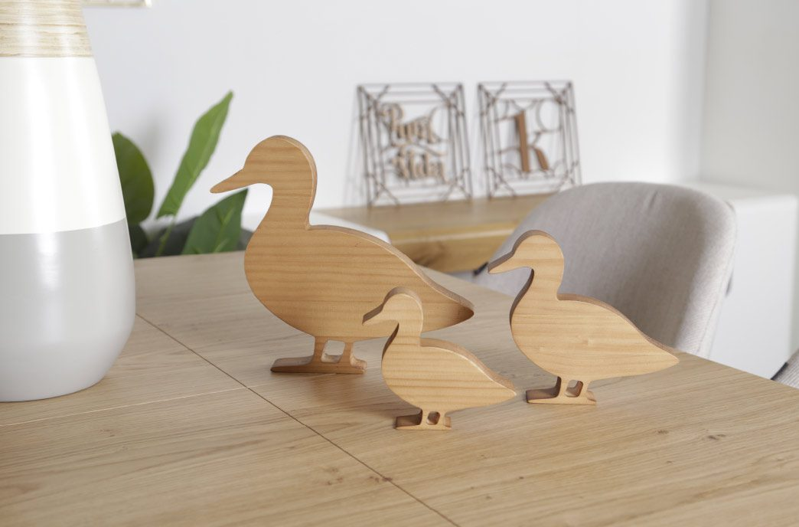

“La calidad de la madera es increíble y el acabado está cuidado al detalle. Un producto hecho con mimo.”
Tu tienda online de decoración en madera

Somos hecco, especialistas en diseño y fabricación de complementos de decoración en madera. Elaboramos nuestros productos de forma artesanal, lo que hace que cada una de nuestras piezas sea única.
Todos nuestros productos están realizados con orgullo en Campo de Criptana, corazón de la Mancha, en la zona centro de España. El mejor país del mundo.
Amamos lo que hacemos y por eso nos gusta trabajar con las mejores maderas, para ofrecer espacios singulares, donde disfrutamos creando una ambientación en madera única. Especializados en diseños personalizados en madera, nuestro reto es sorprender al cliente.
“La calidad de la madera es increíble y el acabado está cuidado al detalle. Un producto hecho con mimo.”
“Compré un regalo y fue un acierto total. Diseño precioso, envío rápido y muy bien embalado.”
“Compré un regalo y fue un acierto total. Diseño precioso, envío rápido y muy bien embalado.”